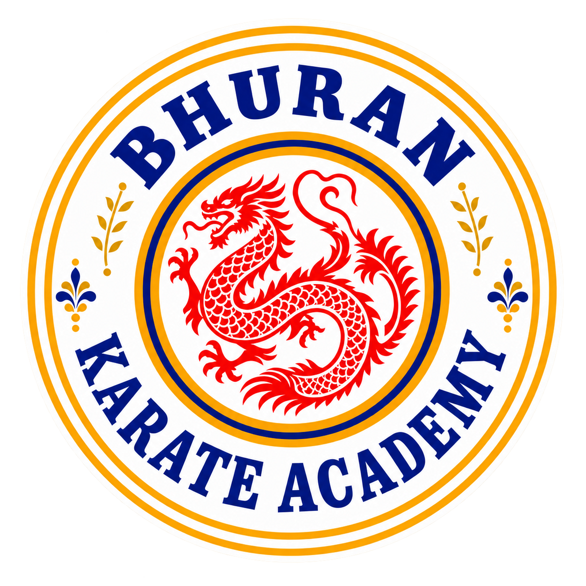
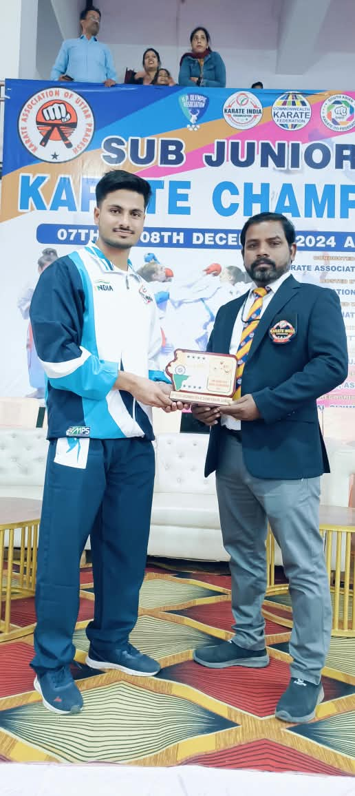

Students trained
Experience across more than 15 schools.

DYNAMICKARATE & DANCE ACADEMY · AGRAFOUNDER & HEAD COACH
A passionate martial artist, professional Karate Coach, Physical Education & Sports Trainer, and Certified Fitness Trainer with extensive experience in martial arts and school sports.
Experience across more than 15 schools.
Experienced male and female trainers.

THE JOURNEY BEHIND THE COACH
Japanese Shotokan Karate
Black Belt certifications and Dan promotions in Japanese Shotokan Karate Do Federation India.
We have a team of certified and experienced trainers, including both male and female coaches, to provide professional training in a safe, supportive, and motivating environment.